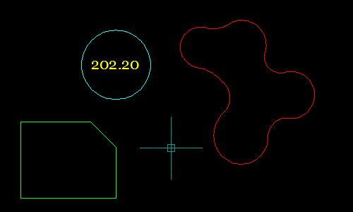

Areas to Field
This page is delivered for consistency purposes only, as part of the LeeMac sample module of DynALisp, which shows how DynALisp turns existing AutoLISP programs into a module. The program and its description are the work of Lee Mac, who keeps all the credit for them. The original page, with the latest version, is on Lee Mac's website: https://lee-mac.com/areastofield.html
See also Length & Area Field.
| Function Syntax | LM-AreaFieldToMtext – original syntax: A2F (see aliases) |
| Current Version | 1.3 |
| Compatible with AutoCAD for Mac? | No |
| Compatible with AutoCAD LT? | Yes |
| Original Page | lee-mac.com/areastofield.html |
Program Description
This program allows a user to create an MText object containing a Field Expression referencing the area, or sum of areas, of one or more selected objects.
Upon issuing the command syntax A2F at the AutoCAD command-line, the user is prompted to make a selection of objects for which to retrieve the area; if more than one object is selected, the cumulative area for all objects will be displayed by the resultant MText Field.
Following object selection, the user is prompted to pick a point at which to create the MText Field. If the specified point resides within an AutoCAD table cell, the program will populate the table cell with the appropriate Field Expression.
The Field will display the sum of the areas of the selected objects, formatted using the Field formatting code specified at the top of the program - this formatting code may be altered to suit the user's requirements and is described in more detail below.
Demonstration

Area Format
The field formatting code indicated at the top of the program source code (line 14) may be altered to display the area in a desired format:
(setq fmt "%lu6%qf1") ;; Field Formatting
To determine the correct formatting code to be used, perform the following steps:
- Type FIELD at the AutoCAD command-line and press ENTER to open the Field dialog.
- Select Objects from the 'Field Category' drop-down menu.
- Select Object from the 'Field Names' section.
- Select an object (with area) from the drawing by clicking the object selection button adjacent to the 'Object Type' box.
- Select the Area property from the 'Property' panel.
- Configure the formatting options as desired.
- Click OK and pick a point in the drawing to create a temporary MText Field.
- Download & load my Field Formatting Code program.
- Type fieldformat to run the program and select the temporary MText Field created earlier.
- Following a valid selection, the field formatting code will be printed to the command-line, e.g.:
- Copy the formatting code (including the quotation marks) to the program source code where noted:
- Save and load the modified program file.
Formatting code: "%lu4%ds44%th39"
(setq fmt "%lu4%ds44%th39") ;; Field Formatting
See also Length & Area Field.
Bundled program notes
;;------------------------=={ Areas to Field }==------------------------;;
;; ;;
;; This program allows a user to create an MText object containing a ;;
;; Field Expression referencing the area, or sum of areas, of one or ;;
;; more selected objects. ;;
;; ;;
;; Upon issuing the command syntax 'A2F' at the AutoCAD command-line, ;;
;; the user is prompted to make a selection of objects for which to ;;
;; retrieve the area; if more than one object is selected, the ;;
;; cumulative area for all objects will be displayed by the resultant ;;
;; MText Field. ;;
;; ;;
;; Following object selection, the user is prompted to pick a point ;;
;; at which to create the MText Field. If the specified point resides ;;
;; within an AutoCAD table cell, the program will populate the table ;;
;; cell with the appropriate Field Expression. ;;
;; ;;
;; The Field will display the sum of the areas of the selected ;;
;; objects, formatted using the Field formatting code specified at ;;
;; the top of the program - this formatting code may be altered to ;;
;; suit the user's requirements. ;;
;; ;;
;;----------------------------------------------------------------------;;
;; Author: Lee Mac, Copyright © 2014 - www.lee-mac.com ;;
;;----------------------------------------------------------------------;;
;; Version 1.3 - 2014-07-17 ;;
;;----------------------------------------------------------------------;;
Command Names And Aliases
As in every DynALisp module, each program of this sample module has one main command, named LM-*, and the original command names of Lee Mac's page are kept as its aliases: they run the same command, and can be added, renamed or removed in Dyl-Suite (saved in Resources\Aliases.csv).
| Command | Aliases | Name |
|---|---|---|
| LM-AreaFieldToMtext | A2F | Area Field To Mtext |